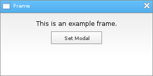

Löve Frames - The Frame Object
Return to Index
Information
The frame object is a mouse-moveable object meant to serve as a base parent for other objects.
It has a close button and can have a custom name. It also has a docking functionality that lets it dock
onto other frame objects when being moved with the mouse.
Example Use
local frame = loveframes.Create("frame")
frame:SetName("Frame")
frame:CenterWithinArea(unpack(demo.centerarea))
frame:SetIcon("resources/images/application.png")
frame:SetDockable(true)
local text = loveframes.Create("text", frame)
text:SetText("This is an example frame.")
text.Update = function(object, dt)
object:CenterX()
object:SetY(40)
end
local button = loveframes.Create("button", frame)
button:SetText("Modal")
button:SetWidth(100)
button:Center()
button.Update = function(object, dt)
local modal = object:GetParent():GetModal()
if modal then
object:SetText("Remove Modal")
object.OnClick = function()
object:GetParent():SetModal(false)
end
else
object:SetText("Set Modal")
object.OnClick = function()
object:GetParent():SetModal(true)
end
end
end

Event Callbacks
OnClose - Called when the object is closed via it's close button
- Arguments passed: self [object]
- Note: Returning false in this callback will prevent the frame from being closed.
- Arguments passed: self [object], dock_object [object]
- Arguments passed: self [object], width [number], height [number]
- Arguments passed: self [object]
- Note: Returning false in this callback will prevent the frame from being closed.
local frame = loveframes.Create("frame")
frame.OnClose = function(object)
print("The frame was closed.")
end
OnDock - Called when the object docks onto another frame - Arguments passed: self [object], dock_object [object]
local frame = loveframes.Create("frame")
frame.OnDock = function(object, dock_object)
print("Frame " ..object:GetName().. " has docked onto frame " ..dock_object:GetName().. ".")
end
OnResize - Called when the object is resized by the user - Arguments passed: self [object], width [number], height [number]
local frame = loveframes.Create("frame")
frame.OnResize = function(object, width, height)
print(width, height)
end
Methods
SetName - Sets the object's name
- Returns 1 value: object name [string]
- Returns 1 value: draggable [boolean]
- Returns 1 value: screen locked [boolean]
- Returns 1 value: modaled [boolean]
- Returns 1 value: parent locked [boolean]
- Returns 1 value: icon [image]
- Returns 1 value: dockable [bool]
- Returns 1 value: resizable [bool]
- Returns 1 value: minwidth [number]
- Returns 1 value: maxwidth [number]
- Returns 1 value: minheight [number]
- Returns 1 value: maxheight [number]
- Returns 1 value: always_on_top [bool]
object:SetName(name[string])GetName - Gets the object's name
- Returns 1 value: object name [string]
local name = object:GetName()SetDraggable - Sets whether the object can be dragged or not
object:SetDraggable(draggable[boolean])GetDraggable - Gets whether the object can be dragged or not
- Returns 1 value: draggable [boolean]
local draggable = object:GetDraggable()SetScreenLocked - Sets whether the frame can be moved passed the boundaries of the window or not
object:SetScreenLocked(screenlocked[boolean])GetScreenLocked - Gets whether the frame can be moved passed the boundaries of the window or not
- Returns 1 value: screen locked [boolean]
local screenlocked = object:GetScreenLocked()ShowCloseButton - Sets whether the object's close button should be drawn and clickable or not
object:ShowCloseButton(show[boolean])MakeTop - Makes the object the top most object
object:MakeTop()SetModal - Used to modal or unmodal the object
object:SetModal(modal[boolean])GetModal - Gets whether the object can is modaled or not
- Returns 1 value: modaled [boolean]
local modal = object:GetModal()SetParentLocked - Sets whether the object can or cannot be dragged outside of it's parent's boundaries
object:SetParentLocked(parentlocked[boolean])GetParentLocked - Gets whether the object can or cannot be dragged outside of it's parent's boundaries
- Returns 1 value: parent locked [boolean]
local parentlocked = object:GetParentLocked()SetIcon - Sets the object's icon
object:SetIcon(icon[string] or icon[image])GetIcon - Gets the object's icon
- Returns 1 value: icon [image]
local icon = object:GetIcon()SetDockable - Sets whether or not the object can dock onto other frames or be docked by other frames
object:SetDockable(dockable[bool])GetDockable - Gets whether or not the object is dockable
- Returns 1 value: dockable [bool]
local dockable = object:GetDockable()SetDockZoneSize - Sets the size of the object's dock zone
object:SetDockZoneSize(size[number])SetResizable - Sets whether or not the object is resizable
object:SetResizable(resizable[bool])GetResizable - Gets whether or not the object is resizable
- Returns 1 value: resizable [bool]
local resizable = object:GetResizable()SetMinWidth - Sets the object's minimum width
object:SetMinWidth(width[number])GetMinWidth - Gets the object's minimum width
- Returns 1 value: minwidth [number]
local minwidth = object:GetMinWidth()SetMaxWidth - Sets the object's maximum width
object:SetMaxWidth(width[number])GetMaxWidth - Gets the object's maximum width
- Returns 1 value: maxwidth [number]
local maxwidth = object:GetMaxWidth()SetMinHeight - Sets the object's minimum height
object:SetMinHeight(height[number])GetMinHeight - Gets the object's minimum height
- Returns 1 value: minheight [number]
local minheight = object:GetMinHeight()SetMaxHeight - Sets the object's maximum height
object:SetMaxHeight(height[number])GetMaxHeight - Gets the object's maximum height
- Returns 1 value: maxheight [number]
local maxheight = object:GetMaxHeight()SetAlwaysOnTop - Sets whether or not the object should always be drawn on top of other objects
object:SetAlwaysOnTop(always_on_top[bool])GetAlwaysOnTop - Gets whether or not the object should always be drawn on top of other objects
- Returns 1 value: always_on_top [bool]
local always_on_top = object:GetAlwaysOnTop()